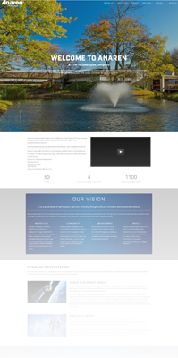
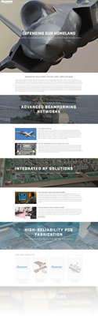
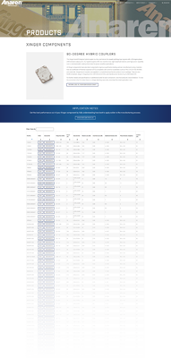

<section id="anaren" style="margin-bottom: 0">
  <div class="container" style="padding-top: 0">
    <div class="grid">
      <div>
        <article style="margin: 0; padding: 0">
          <div class="matched-radius">
            <div
              class="matched-radius__inner"
              style="
                background-image: linear-gradient(white, var(--highlight));
                padding: var(--block-spacing-vertical)
                  var(--block-spacing-horizontal);
              "
            >
              <h2 style="margin-bottom: 57px">Anaren.com</h2>

              <p style="margin-bottom: 15px">
                The space and defense company is based in East Syracuse, New
                York. I was hired to assist with their website redesign in 2017.
                The site was built using <strong>Drupal</strong> and a
                customized theme and took around 6 months. My responsibilities
                included styling the frontend and constructing data tables for
                their products. I collaborated with a team of developers,
                designers, and marketers to develop a responsive and
                user-friendly website. This project was distinctive in the sense
                that the site information was sourced from various stakeholders
                across different departments of the company.
              </p>
              <p>
                Anaren was
                <a
                  href="https://www.microwavejournal.com/articles/30167-anaren-acquired-by-ttm-technologies-for-775m"
                  target="_blank"
                  class="text-underline"
                >
                  acquired by TTM Technologies for $775M</a
                >
                shortly after we finished the website project.
              </p>
              <p>
                Click the thumbnails below to check out their Wordpress site or
                head over to
                <a
                  href="https://web.archive.org/web/20171207031626/https://www.anaren.com/"
                  target="_blank"
                  class="text-underline"
                  >Anaren.com</a
                >
              </p>
              <div class="thumb-wrapper">
                <a
                  target="_blank"
                  href="{{site.baseurl}}/assets/images/anaren/1.png"
                  ></a>

                <a
                  target="_blank"
                  href="{{site.baseurl}}/assets/images/anaren/2.png"
                  ></a>
                <a
                  target="_blank"
                  href="{{site.baseurl}}/assets/images/anaren/3.png"
                  ></a>
              </div>
            </div>
          </div>
        </article>
      </div>
    </div>
  </div>
</section>
